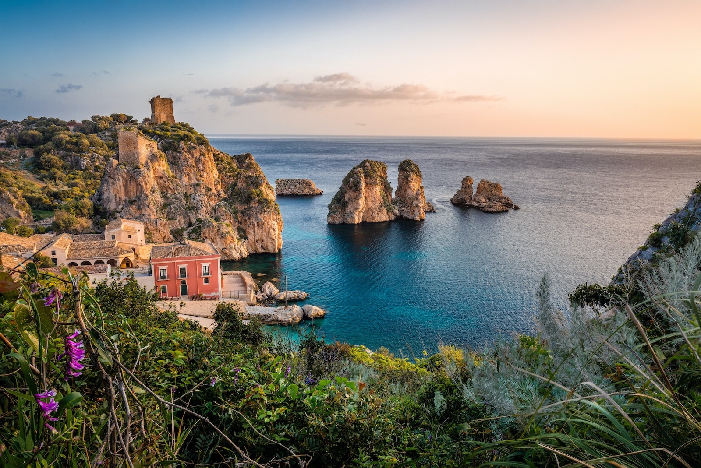

LA SICILE !
5 bonnes raisons de partir en Sicile La Sicile est une destination pleine de charme qui offre une expérience culturelle inédite au cœur de la Méditerranée. Très appréciée pour les activités balnéaires, on ne se lasse pas d’en découvrir sa fabuleuse gastronomie. Plaisir de l’estomac mais aussi plaisir des yeux, les paysages de Sicile ne manqueront pas de vous fasciner avec en fond de toile l’Etna, les criques naturelles ainsi que ses ruines classées.